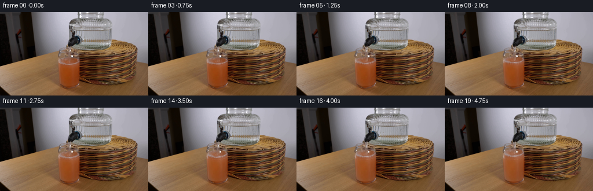
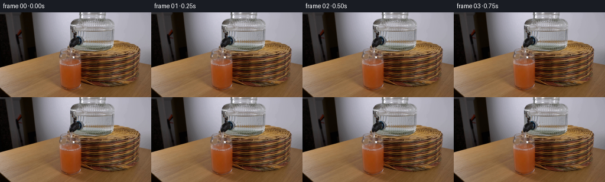

CODING AGENTS AS PIXEL WORLD MODELS
traex/GPT-6.1-Sol · 0186
点击播放 · 原生 RGB 像素
逐轮保存的候选
回放视频、检查图与代码变化。
每份候选均可单独播放。实际图片检查记录在下方工具轨迹中。
候选 01播放与检查图
点击播放 · 原生 RGB 像素


展开代码变化
--- 上一保存版本
+++ 本次保存版本
@@ -0,0 +1,159 @@
+from pathlib import Path
+import numpy as np
+from PIL import Image
+import cv2
+from artifact_io import save
+
+ROOT = Path(__file__).resolve().parent
+W,H = 256,144
+S=4
+original = np.asarray(Image.open(ROOT/'first_frame.png').convert('RGB'), dtype=np.uint8)
+base = original.astype(np.float32)
+# Pixel-centre coordinate system. All optical changes are calculated at subpixel resolution.
+y,x = np.mgrid[0:H*S,0:W*S].astype(np.float32)
+x=(x+.5)/S-.5; y=(y+.5)/S-.5
+photo = cv2.remap(base, x, y, cv2.INTER_CUBIC, borderMode=cv2.BORDER_REFLECT_101)
+
+def smooth(a,b,v):
+ z=np.clip((v-a)/(b-a),0,1)
+ return z*z*(3-2*z)
+
+def sample(xx,yy):
+ return cv2.remap(base,xx.astype(np.float32),yy.astype(np.float32),cv2.INTER_CUBIC,borderMode=cv2.BORDER_REFLECT_101)
+
+def blend(dst,src,alpha):
+ a=np.clip(alpha,0,1)[...,None]
+ return dst*(1-a)+src*a
+
+cx=119.35
+rx=17.45
+ell=np.sqrt(np.maximum(0,1-((x-cx)/rx)**2))
+initial_back=85.0-5.7*ell
+# A cylindrical tumbler, mildly tapered, with a rounded, heavy glass bottom.
+width=17.45-.020*np.maximum(y-84,0)
+basebottom=122.1+5.0*np.sqrt(np.maximum(0,1-((x-cx)/16.6)**2))
+inside=smooth(-.45,.45,width-np.abs(x-cx))*smooth(-.45,.45,basebottom-y)
+# Strong, fixed reflections on the glass must not move with the beverage.
+static_glints=smooth(168,218,photo.mean(2)) * (1-smooth(79,81,y))
+left_edge=np.exp(-((x-(101.6+.043*(y-80)))/1.22)**2)
+right_edge=np.exp(-((x-(136.7-.025*(y-85)))/1.0)**2)
+edge_glass=np.clip(.48*left_edge+.56*right_edge,0,.68)
+
+# Fixed subpixel microtexture, comparable to the grain of the source photograph.
+rng=np.random.default_rng(186)
+noise_small=rng.normal(0,.48,(H,W)).astype(np.float32)
+noise=cv2.remap(noise_small,x,y,cv2.INTER_LINEAR,borderMode=cv2.BORDER_REFLECT_101)
+
+frames=[original.copy()]
+for i in range(1,20):
+ t=i/4
+ # The tap is already positioned over the glass; flow builds smoothly, then remains steady.
+ strength=1-np.exp(-t/.115)
+ elapsed=t-.16*(1-np.exp(-t/.16))
+ rise=1.76*elapsed
+ surface_y=85.0-rise
+ wave=.18*np.sin(6.0*t+(x-cx)*.27)+.10*np.sin(10.5*t-(x-cx)*.47)
+ back=initial_back-rise+wave
+ fill=inside*smooth(-.45,.5,y-back)
+
+ # Re-use the source's real optical texture: height expansion is anchored at the bottom,
+ # while the upper ellipse and its reflections travel upward with the free surface.
+ depth=np.clip((y-back)/(basebottom-back+1e-5),0,1)
+ source_y=initial_back+depth*(basebottom-initial_back)
+ # Small rolling refractive eddies, strongest underneath the falling jet.
+ near=np.exp(-((x-122.8)/9.0)**2)*np.exp(-np.maximum(y-surface_y,0)/24)
+ eddy_x=.36*near*np.sin(.33*(y-surface_y)-4.8*t+.13*(x-cx))
+ eddy_y=.28*near*np.sin(.43*(x-cx)+.27*(y-surface_y)+3.1*t)
+ fluid=sample(x+eddy_x,source_y+eddy_y)
+
+ # Mass conservation: added water reduces pigment concentration. The optical change is
+ # gentle and retains the orange/red colour and the original glass shading.
+ concentration=43.0/(43.0+rise)
+ fade=1-concentration
+ fluid[:,:,0]+=fade*29
+ fluid[:,:,1]+=fade*91
+ fluid[:,:,2]+=fade*119
+ # A submerged, transparent jet entrains juice and rolls into small pale orange eddies.
+ d=y-surface_y
+ plume_x=122.4+1.35*np.sin(.20*d-2.7*t)*(1-np.exp(-np.maximum(d,0)/9))
+ plume_width=1.4+.115*np.maximum(d,0)
+ plume=np.exp(-((x-plume_x)/plume_width)**2)*np.exp(-np.maximum(d,0)/18)
+ plume*=smooth(-2,2,d)*(1-smooth(30,42,d))
+ roll=np.zeros_like(x)
+ for k in range(3):
+ z=8+7*k+1.6*np.sin(t*2.2+k)
+ px=122.1+(-1 if k%2 else 1)*(2.0+1.7*k)*np.sin(t*2.1+k*.7)
+ roll+=np.exp(-((x-px)/(2.8+k*.8))**2-((d-z)/(3.3+k*.65))**2)
+ mixing=np.clip((.09*plume+.020*roll)*strength,0,.16)
+ cloudy=fluid.copy()
+ cloudy[:,:,0]+=29; cloudy[:,:,1]+=48; cloudy[:,:,2]+=55
+ fluid=blend(fluid,cloudy,mixing)
+ fluid+=noise[...,None]*.32*strength
+ # Keep the dry glass and its fixed lateral highlights intact.
+ fluid_alpha=fill*(1-edge_glass)*(1-static_glints*.90)
+ frame=blend(photo,fluid,fluid_alpha)
+
+ # Elliptical waves from the impact site. Each crest propagates horizontally, with a
+ # much shorter projected vertical scale; waves fade before reaching the glass wall.
+ dy=y-surface_y
+ r=np.sqrt((x-122.3)**2+(dy/0.30)**2)
+ pool=(1-smooth(.91,1.02,((x-cx)/rx)**2+(dy/5.7)**2))*inside
+ ripple=(.65*np.cos(1.55*r-9.5*t)+.35*np.cos(2.5*r-14.8*t))
+ ripple*=np.exp(-r/12)*pool*.75*strength
+ frame+=ripple[...,None]*np.array([4.8,5.7,6.2],np.float32)
+ # Tiny depression and pale, aerated footprint, not a foam cap.
+ hit=np.exp(-((x-122.3)/2.25)**2-((dy+.10)/.80)**2)*strength*inside
+ frame=blend(frame,np.array([190,160,133],np.float32),hit*.17)
+ hollow=np.exp(-((x-122.25)/1.15)**2-((dy-.58)/.56)**2)*strength*inside
+ frame=blend(frame,np.array([100,73,51],np.float32),hollow*.15)
+
+ # A gravitationally accelerating, coherent water column below the tap. Clear water is
+ # modelled as a moving lens with silver reflection at one edge, not as an opaque line.
+ outlet=58.15
+ drop=np.maximum(0,y-outlet)
+ velocity=np.sqrt(210**2+2*450*drop)
+ radius=1.67*np.sqrt(210/velocity)*np.sqrt(strength)
+ jetx=122.15+.018*drop+.11*np.sin(.33*drop-11*t)+.06*np.sin(.76*drop-17*t)
+ q=(x-jetx)/(radius+1e-6)
+ jet_mask=smooth(-.28,.20,radius-np.abs(x-jetx))
+ jet_mask*=smooth(-.22,.25,y-outlet)*(1-smooth(-.2,.65,y-(surface_y+.75)))
+ jet_mask*=strength
+ # Tiny deformation of the wall/wood seen through the curved stream.
+ refr_x=x+.78*np.sin(np.clip(q,-1,1)*2.55)
+ refr_y=y+.11*np.sin(drop*.63-12*t)
+ refracted=sample(refr_x,refr_y)
+ clear=frame*.56+refracted*.44
+ highlight=np.exp(-((q+.46)/.25)**2)
+ dark=np.exp(-((q-.74)/.19)**2)
+ pulse=.74+.26*np.sin(drop*1.03-19.6*t)*np.sin(drop*.37-12.7*t)
+ clear=clear*(1-(.16*dark)[...,None])
+ clear=blend(clear,np.array([228,228,222],np.float32),(.27*highlight*pulse+.07*np.exp(-(q/.50)**2)))
+ # Narrow axial glints streak downwards with the water.
+ glint=np.exp(-((q+.10)/.13)**2)*(.5+.5*np.sin(drop*1.85-25.7*t))**8
+ clear+=glint[...,None]*17
+ frame=blend(frame,clear,jet_mask*(1-static_glints*.82))
+
+ # Fine bubbles carried just below the impact and a few small short-lived splashes.
+ for k in range(8):
+ phase=(t*.78+k*.173)%1.0
+ by=surface_y+2+phase*(13+2*(k%3))
+ bx=122.0+np.sin(k*2.39+phase*3.5)*(1.1+phase*4.2)
+ rad=.22+.12*(k%3)
+ bd=np.sqrt((x-bx)**2+((y-by)/.78)**2)
+ bubble=np.exp(-((bd-rad)/.14)**2)*.10*np.sin(np.pi*phase)*strength*fill
+ frame=blend(frame,np.array([197,161,123],np.float32),bubble)
+ for k in range(3):
+ phase=(t*1.85+k*.35)%1
+ sx=122.25+(k-1)*2.8*np.sin(np.pi*phase)
+ sy=surface_y-.45-1.8*np.sin(np.pi*phase)
+ splash=np.exp(-((x-sx)/.30)**2-((y-sy)/.48)**2)*.12*np.sin(np.pi*phase)*strength
+ frame=blend(frame,np.array([205,189,166],np.float32),splash)
+
+ # Downsample only the change, ensuring every unmoving pixel remains the exact source.
+ delta=cv2.resize(frame-photo,(W,H),interpolation=cv2.INTER_AREA)
+ rendered=np.clip(np.rint(base+delta),0,255).astype(np.uint8)
+ frames.append(rendered)
+
+frames=np.stack(frames)
+assert np.array_equal(frames[0],original)
+save(frames,ROOT)
可观测工具轨迹
实际执行的命令与返回图片。
命令 1exit 0
/bin/bash -lc "ls -la && cat prompt.txt && printf '\\n---RULES---\\n' && cat GENERATION_RULES.md"
命令 2exit 0
/bin/bash -lc "cat artifact_io.py && python - <<'PY'
from PIL import Image
import numpy as np
im=np.array(Image.open('first_frame.png'));print(im.shape)
print('range',im.min(axis=(0,1)),im.max(axis=(0,1)))
# coarse rgb grid
for y in range(0,144,8):
print(y, ' '.join('%02x%02x%02x'%tuple(np.mean(im[y:y+8,x:x+8],axis=(0,1)).astype(int)) for x in range(0,256,8)))
PY"命令 3exit 0
/bin/bash -lc "python - <<'PY'
from PIL import Image
import numpy as np
A=np.array(Image.open('first_frame.png')).astype(float)
# luminance 2x2 ascii
G=A.mean(2)
chars=' .,:;irsXA253hMHGS#9B&@'
for y in range(0,144,2):
print(f'{y:3}', ''.join(chars[int(np.mean(G[y:y+2,x:x+2])*len(chars)/256)] for x in range(0,256,2)))
print('\\nWarm orange classifier 1 char per pixel, crop x85:151 y50:136')
for y in range(50,136):
s=''
for r,g,b in A[y,85:151]:
s+= 'O' if r>g*1.85 and r>100 else 'o' if r>g*1.7 and r>70 else '+' if r>g*1.5 else ':' if r>g*1.3 else ' ' if r>110 else '.' if r>70 else '#' if r>30 else '@'
print(f'{y:3}',s)
PY"命令 4exit 0
/bin/bash -lc "python - <<'PY'
from PIL import Image
import numpy as np
A=np.array(Image.open('first_frame.png'))
print('x', ''.join(str(x//10%10) for x in range(90,145)))
print(' ', ''.join(str(x%10) for x in range(90,145)))
for y in range(55,138):
s=''
for r,g,b in A[y,90:145].astype(float):
v=(r+g+b)/3
s+= 'R' if r>1.7*g and r>100 else 'r' if r>1.65*g and r>70 else 't' if r>1.3*g else '@' if v<15 else '#' if v<35 else '+' if v<65 else '.' if v<100 else ':' if v<130 else 'o' if v<170 else 'O' if v<215 else 'W'
print(f'{y:3}',s)
for y in [54,55,56,57,58,60,64,68,70,74,76,78,80,82,84,86,88,90,92,94,96,100,112,122,128,132]:
print(y,' '.join('%d=%s'%(x,tuple(A[y,x])) for x in range(98,143,2)))
PY"命令 5exit 0
/bin/bash -lc "python - <<'PY'
from PIL import Image
import numpy as np
A=np.array(Image.open('first_frame.png')).astype(float)
chars=' .:-=+*#%@'
print(' '+''.join(str(x//10%10) for x in range(96,161)))
print(' '+''.join(str(x%10) for x in range(96,161)))
for y in range(55,96):
print(f'{y:3} L ', ''.join(chars[min(9,int(np.mean(v)/256*10))] for v in A[y,96:161]), 'sat', ''.join(chars[min(9,int((r-g)/160*10))] if r>=g else ' ' for r,g,b in A[y,96:161]))
# all pixels bright reflective etc
print('highlights',[(int(x),int(y),tuple(A[y,x].astype(int))) for y,x in np.argwhere((A.mean(2)>190)& (np.indices(A.shape[:2])[1]>97)&(np.indices(A.shape[:2])[1]<140)&(np.indices(A.shape[:2])[0]>60))])
PY"命令 6exit 0
/bin/bash -lc "python - <<'PY'
from PIL import Image
import numpy as np
A=np.array(Image.open('first_frame.png')).astype(int)
for y in range(60,80):
print(y,' '.join(f'{x}:{r},{g},{b}' for x,(r,g,b) in enumerate(A[y,99:142],99)))
print('vertical profiles')
for x in [100,101,102,103,104,105,106,112,116,118,120,124,128,132,135,136,137,138,139,140]:
print(x,' '.join(str(int(v)) for v in A[58:97,x].mean(1)))
PY"命令 7exit 0
/bin/bash -lc "python - <<'PY' import importlib.util for p in ['numpy','scipy','cv2','PIL']: print(p, bool(importlib.util.find_spec(p))) PY"
命令 8exit 0
/bin/bash -lc "cat > generate.py <<'PY'
from pathlib import Path
import numpy as np
from PIL import Image
import cv2
from artifact_io import save
ROOT = Path(__file__).resolve().parent
W,H = 256,144
S=4
original = np.asarray(Image.open(ROOT/'first_frame.png').convert('RGB'), dtype=np.uint8)
base = original.astype(np.float32)
# Pixel-centre coordinate system. All optical changes are calculated at subpixel resolution.
y,x = np.mgrid[0:H*S,0:W*S].astype(np.float32)
x=(x+.5)/S-.5; y=(y+.5)/S-.5
photo = cv2.remap(base, x, y, cv2.INTER_CUBIC, borderMode=cv2.BORDER_REFLECT_101)
def smooth(a,b,v):
z=np.clip((v-a)/(b-a),0,1)
return z*z*(3-2*z)
def sample(xx,yy):
return cv2.remap(base,xx.astype(np.float32),yy.astype(np.float32),cv2.INTER_CUBIC,borderMode=cv2.BORDER_REFLECT_101)
def blend(dst,src,alpha):
a=np.clip(alpha,0,1)[...,None]
return dst*(1-a)+src*a
cx=119.35
rx=17.45
ell=np.sqrt(np.maximum(0,1-((x-cx)/rx)**2))
initial_back=85.0-5.7*ell
# A cylindrical tumbler, mildly tapered, with a rounded, heavy glass bottom.
width=17.45-.020*np.maximum(y-84,0)
basebottom=122.1+5.0*np.sqrt(np.maximum(0,1-((x-cx)/16.6)**2))
inside=smooth(-.45,.45,width-np.abs(x-cx))*smooth(-.45,.45,basebottom-y)
# Strong, fixed reflections on the glass must not move with the beverage.
static_glints=smooth(168,218,photo.mean(2)) * (1-smooth(79,81,y))
left_edge=np.exp(-((x-(101.6+.043*(y-80)))/1.22)**2)
right_edge=np.exp(-((x-(136.7-.025*(y-85)))/1.0)**2)
edge_glass=np.clip(.48*left_edge+.56*right_edge,0,.68)
# Fixed subpixel microtexture, comparable to the grain of the source photograph.
rng=np.random.default_rng(186)
noise_small=rng.normal(0,.48,(H,W)).astype(np.float32)
noise=cv2.remap(noise_small,x,y,cv2.INTER_LINEAR,borderMode=cv2.BORDER_REFLECT_101)
frames=[original.copy()]
for i in range(1,20):
t=i/4
# The tap is already positioned over the glass; flow builds smoothly, then remains steady.
strength=1-np.exp(-t/.115)
elapsed=t-.16*(1-np.exp(-t/.16))
rise=1.76*elapsed
surface_y=85.0-rise
wave=.18*np.sin(6.0*t+(x-cx)*.27)+.10*np.sin(10.5*t-(x-cx)*.47)
back=initial_back-rise+wave
fill=inside*smooth(-.45,.5,y-back)
# Re-use the source's real optical texture: height expansion is anchored at the bottom,
# while the upper ellipse and its reflections travel upward with the free surface.
depth=np.clip((y-back)/(basebottom-back+1e-5),0,1)
source_y=initial_back+depth*(basebottom-initial_back)
# Small rolling refractive eddies, strongest underneath the falling jet.
near=np.exp(-((x-122.8)/9.0)**2)*np.exp(-np.maximum(y-surface_y,0)/24)
eddy_x=.36*near*np.sin(.33*(y-surface_y)-4.8*t+.13*(x-cx))
eddy_y=.28*near*np.sin(.43*(x-cx)+.27*(y-surface_y)+3.1*t)
fluid=sample(x+eddy_x,source_y+eddy_y)
# Mass conservation: added water reduces pigment concentration. The optical change is
# gentle and retains the orange/red colour and the original glass shading.
concentration=43.0/(43.0+rise)
fade=1-concentration
fluid[:,:,0]+=fade*29
fluid[:,:,1]+=fade*91
fluid[:,:,2]+=fade*119
# A submerged, transparent jet entrains juice and rolls into small pale orange eddies.
d=y-surface_y
plume_x=122.4+1.35*np.sin(.20*d-2.7*t)*(1-np.exp(-np.maximum(d,0)/9))
plume_width=1.4+.115*np.maximum(d,0)
plume=np.exp(-((x-plume_x)/plume_width)**2)*np.exp(-np.maximum(d,0)/18)
plume*=smooth(-2,2,d)*(1-smooth(30,42,d))
roll=np.zeros_like(x)
for k in range(3):
z=8+7*k+1.6*np.sin(t*2.2+k)
px=122.1+(-1 if k%2 else 1)*(2.0+1.7*k)*np.sin(t*2.1+k*.7)
roll+=np.exp(-((x-px)/(2.8+k*.8))**2-((d-z)/(3.3+k*.65))**2)
mixing=np.clip((.09*plume+.020*roll)*strength,0,.16)
cloudy=fluid.copy()
cloudy[:,:,0]+=29; cloudy[:,:,1]+=48; cloudy[:,:,2]+=55
fluid=blend(fluid,cloudy,mixing)
fluid+=noise[...,None]*.32*strength
# Keep the dry glass and its fixed lateral highlights intact.
fluid_alpha=fill*(1-edge_glass)*(1-static_glints*.90)
frame=blend(photo,fluid,fluid_alpha)
# Elliptical waves from the impact site. Each crest propagates horizontally, with a
# much shorter projected vertical scale; waves fade before reaching the glass wall.
dy=y-surface_y
r=np.sqrt((x-122.3)**2+(dy/0.30)**2)
pool=(1-smooth(.91,1.02,((x-cx)/rx)**2+(dy/5.7)**2))*inside
ripple=(.65*np.cos(1.55*r-9.5*t)+.35*np.cos(2.5*r-14.8*t))
ripple*=np.exp(-r/12)*pool*.75*strength
frame+=ripple[...,None]*np.array([4.8,5.7,6.2],np.float32)
# Tiny depression and pale, aerated footprint, not a foam cap.
hit=np.exp(-((x-122.3)/2.25)**2-((dy+.10)/.80)**2)*strength*inside
frame=blend(frame,np.array([190,160,133],np.float32),hit*.17)
hollow=np.exp(-((x-122.25)/1.15)**2-((dy-.58)/.56)**2)*strength*inside
frame=blend(frame,np.array([100,73,51],np.float32),hollow*.15)
# A gravitationally accelerating, coherent water column below the tap. Clear water is
# modelled as a moving lens with silver reflection at one edge, not as an opaque line.
outlet=58.15
drop=np.maximum(0,y-outlet)
velocity=np.sqrt(210**2+2*450*drop)
radius=1.67*np.sqrt(210/velocity)*np.sqrt(strength)
jetx=122.15+.018*drop+.11*np.sin(.33*drop-11*t)+.06*np.sin(.76*drop-17*t)
q=(x-jetx)/(radius+1e-6)
jet_mask=smooth(-.28,.20,radius-np.abs(x-jetx))
jet_mask*=smooth(-.22,.25,y-outlet)*(1-smooth(-.2,.65,y-(surface_y+.75)))
jet_mask*=strength
# Tiny deformation of the wall/wood seen through the curved stream.
refr_x=x+.78*np.sin(np.clip(q,-1,1)*2.55)
refr_y=y+.11*np.sin(drop*.63-12*t)
refracted=sample(refr_x,refr_y)
clear=frame*.56+refracted*.44
highlight=np.exp(-((q+.46)/.25)**2)
dark=np.exp(-((q-.74)/.19)**2)
pulse=.74+.26*np.sin(drop*1.03-19.6*t)*np.sin(drop*.37-12.7*t)
clear=clear*(1-(.16*dark)[...,None])
clear=blend(clear,np.array([228,228,222],np.float32),(.27*highlight*pulse+.07*np.exp(-(q/.50)**2)))
# Narrow axial glints streak downwards with the water.
glint=np.exp(-((q+.10)/.13)**2)*(.5+.5*np.sin(drop*1.85-25.7*t))**8
clear+=glint[...,None]*17
frame=blend(frame,clear,jet_mask*(1-static_glints*.82))
# Fine bubbles carried just below the impact and a few small short-lived splashes.
for k in range(8):
phase=(t*.78+k*.173)%1.0
by=surface_y+2+phase*(13+2*(k%3))
bx=122.0+np.sin(k*2.39+phase*3.5)*(1.1+phase*4.2)
rad=.22+.12*(k%3)
bd=np.sqrt((x-bx)**2+((y-by)/.78)**2)
bubble=np.exp(-((bd-rad)/.14)**2)*.10*np.sin(np.pi*phase)*strength*fill
frame=blend(frame,np.array([197,161,123],np.float32),bubble)
for k in range(3):
phase=(t*1.85+k*.35)%1
sx=122.25+(k-1)*2.8*np.sin(np.pi*phase)
sy=surface_y-.45-1.8*np.sin(np.pi*phase)
splash=np.exp(-((x-sx)/.30)**2-((y-sy)/.48)**2)*.12*np.sin(np.pi*phase)*strength
frame=blend(frame,np.array([205,189,166],np.float32),splash)
# Downsample only the change, ensuring every unmoving pixel remains the exact source.
delta=cv2.resize(frame-photo,(W,H),interpolation=cv2.INTER_AREA)
rendered=np.clip(np.rint(base+delta),0,255).astype(np.uint8)
frames.append(rendered)
frames=np.stack(frames)
assert np.array_equal(frames[0],original)
save(frames,ROOT)
PY
python generate.py
ls -lh pixels.npz index.html inspection.png"命令 9exit 0
/bin/bash -lc "python - <<'PY'
from PIL import Image
import numpy as np
from pathlib import Path
A=np.array(Image.open('first_frame.png')).astype(float)
for k in [1,4,10,19]:
B=np.array(Image.open(f'frames/{k:02d}.png')).astype(float)
d=np.max(abs(B-A),axis=2)
yy,xx=np.nonzero(d>0)
print(k,'changed',len(xx),'bbox', (xx.min(),yy.min(),xx.max(),yy.max()),'max', d.max(),'mean',d[d>0].mean(), 'glass mean',B[96:118,107:132].mean((0,1)))
print('stream pixels y61:79 x121:124',B[61:79,121:125].mean((0,1)))
print('final amber classifier')
B=np.array(Image.open('frames/19.png')).astype(float)
for y in range(58,103):
s=''
for r,g,b in B[y,98:142]:
v=(r+g+b)/3
s+= 'R' if r>1.7*g and r>100 else 'r' if r>1.65*g and r>70 else 't' if r>1.3*g else '@' if v<15 else '#' if v<35 else '+' if v<65 else '.' if v<100 else ':' if v<130 else 'o' if v<170 else 'O' if v<215 else 'W'
print(f'{y:3}',s)
# all external pixels remain perfectly static
F=np.stack([np.array(Image.open(p)) for p in sorted(Path('frames').glob('*.png'))])
assert F.shape==(20,144,256,3) and F.dtype==np.uint8
assert np.array_equal(F[0],A.astype(np.uint8))
print('mean consecutive change:',np.abs(np.diff(F.astype(float),axis=0)).mean((1,2,3)))
PY"保存候选 1 份；完成命令 9 次；可验证图片返回 0 张。原始 API 响应与完整日志保留在本地。